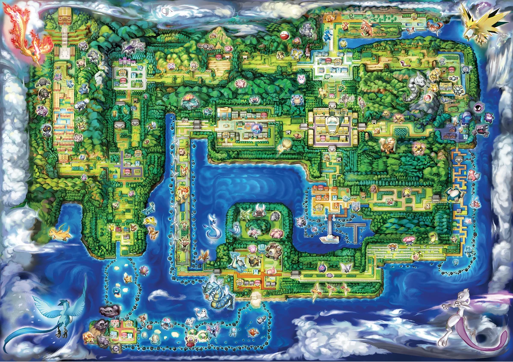

A Jornada em Pokémon Fire Red
Sua aventura começa em Pallet Town, onde você e seu rival, Blue, recebem seus primeiros Pokémon do Professor Carvalho. O objetivo é simples: completar a Pokédex e se tornar o Campeão da Liga Pokémon!
Ao longo do caminho, você enfrentará oito Líderes de Ginásio, cada um com um tipo de Pokémon especializado. Derrotá-los lhe renderá insígnias, que são essenciais para desafiar a Elite Four.
Mas a jornada não será fácil. A misteriosa Equipe Rocket está à espreita, tramando planos para roubar Pokémon e dominar o mundo. Você precisará frustrar seus esquemas em várias ocasiões, desde o Mt. Moon até o Silph Co. em Saffron City.
Após coletar todas as oito insígnias, você estará pronto para o maior desafio: a Liga Pokémon. Lá, você enfrentará os quatro membros da Elite Four e, finalmente, o Campeão. Será que você tem o que é preciso para alcançar o topo?
Além da aventura principal, Fire Red introduz as Ilhas Sevii, uma nova área pós-jogo com mais Pokémon para capturar e missões para completar, expandindo ainda mais a sua experiência em Kanto.